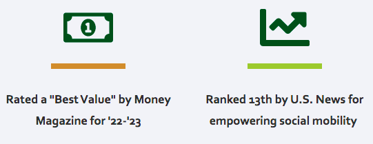
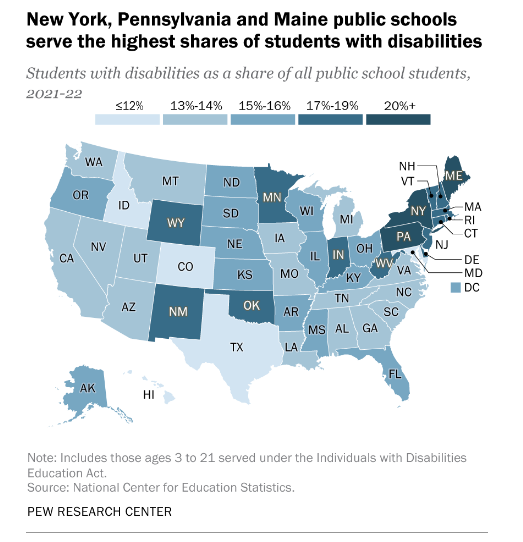

Welcome To Class!
High Expectations
How hard is this class?
- * 4-year Liberal Arts Colleges such as Old Westbury *
Why Old Westbury?
Image Source: https://www.oldwestbury.edu/why-old-westbury
Source: https://www.nytimes.com/interactive/2023/03/27/opinion/build-your-own-college-rankings.html
Why is this class hard?
Your skills must be demonstrableYou must be willing to grow
Why learn math?
Humans need to be able to understand computer outputReasons and rationale are equally important as final answers.
- Use calculators only as a check, not as a substitute for learning.
When will I use math?
Direct uses in careers include...Don't blindly copy apps

Does communication help math?
Talking and discussing helps with understanding the why and how.Get to know the Professor
- Communicate often and frequently.
- The Professor should know you and your needs.
Disabilities: 1 in 4 Americans
Image Source: https://www.cdc.gov/ncbddd/disabilityandhealth/infographic-disability-impacts-all.html
NY serves more disabilities
Image Source: https://www.pewresearch.org/short-reads/2023/07/24/8-facts-about-americans-with-disabilities/
OW has great OSSD services
Image Source: https://www.cdc.gov/ncbddd/disabilityandhealth/infographic-disability-impacts-all.html
Time Commitment
This class is like a part time job.
Devote at least 8 hours / week outside of class time.
Including class time you can easily spend 10-12 hours / week.
Question: Would one hour every single day be enough?
Homework: Due Dates are Not Start Dates
Recommendation
How can I succeed?
Be okay with past failuresFind new strategies for success
Advice From Students
"I wish I had ...
- ... stopped working full time to study more."
- ... gotten help for personal problems."
- ... made time for Prof's Student Hours."
- ... gotten past my ego and found tutoring that I needed."
More advice from students
- "Finishing HW early actually helped me to understand the material better."
- "I didn't expect that making a summary sheet would help me, but it really did!"
- "Working with peers helped me to talk out the concepts, even though I was initially nervous."
- "Going to Student Hours, the Prof helped me clear up in five minutes something I was confused about for months!"
- "I had no idea how much more I could understand simply by reading and preparing before class starts. I wish I had done that earlier."
How To Navigate This Class
watch videos, try problems
DURING CLASS - participate, ask questions,
discuss, practice problems
AFTER CLASS - review, practice more, get help
Warning on Outside Materials
Warning on Outside Materials
... explain things differently.
... explain things we are not doing in this class.
... can be helpful!
... can be confusing!
Use outside materials as supplement not replacement for our course materials.
Grading Standards
Aim high. Leave room for error!
Your Professors Can Help You
- Students sometimes struggle with pursuing a degree their parents or someone else picked.
- If you choose a career path based on what you think you "should" do, rather than your passions, you may struggle more.
- Talk to your Professors, we can help you navigate and find the best path for you.